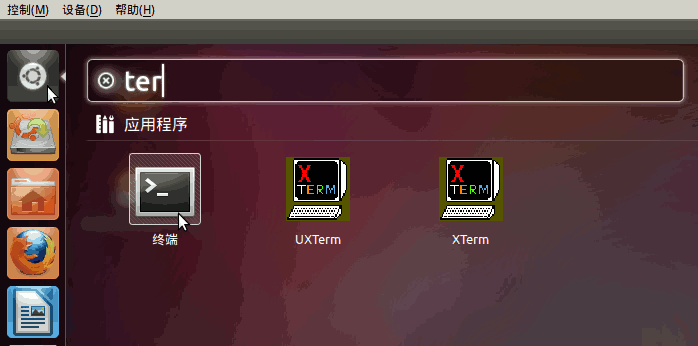
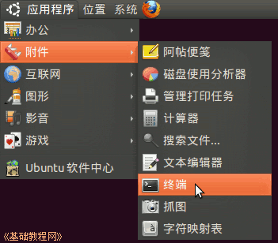
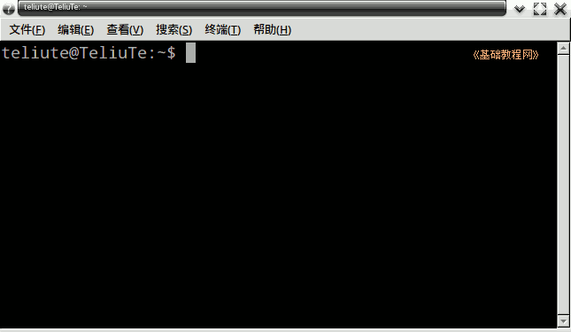
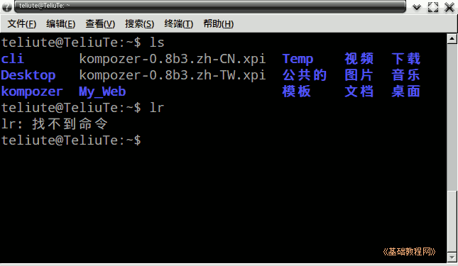
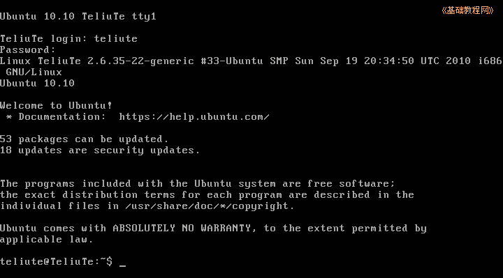

Ubuntu 命令行教程
作者：TeliuTe 来源：基础教程网
二、进入命令行 返回目录 下一课命令一般在终端中运行，先要进入到终端里；
1、进入到终端
1）新版的点一下左上角的圆圈按钮，稍等在旁边出来的文本框中输入字母 ter 然后点击下边出来的终端图标，

旧版的点左上角菜单：“ 应用程序－附件－终端” 进入终端窗口；

2）出来一个窗口，在提示符 $ 后面就可以输入命令，按回车执行；

3）命令执行后会有提示，如果出错会显示 error 或“找不到命令”；

4）退出终端可以直接关闭窗口，或者输入 exit 命令；
5）按组合键 Ctrl+Alt+F1 也可以进入终端，这时是全屏模式，需要重新登录，
输入自己的用户名和密码，密码不显示，盲打输入后按回车；

1）输入 exit 退出登录，然后按 Alt+F7 返回到桌面；
本节学习了进入命令行的基础知识，如果你成功地完成了练习，请继续学习下一课内容；
本教程由86团学校TeliuTe制作|著作权所有
基础教程网：http://teliute.org/
美丽的校园……
转载和引用本站内容，请保留版权信息和本站链接。